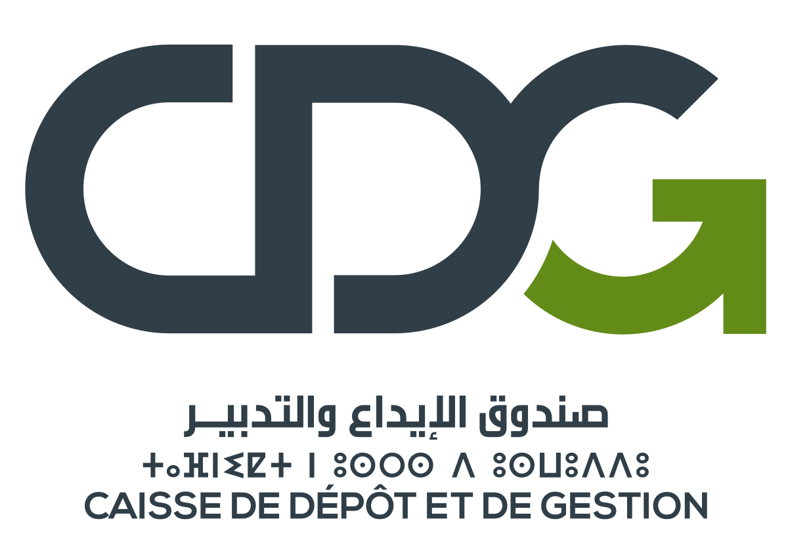

<button pButton type="button" (click)="visibleSidebar1 = true" icon="pi pi-bars" id="menu_button"></button>
<p-sidebar [(visible)]="visibleSidebar1" [baseZIndex]="10000" [style]="{width:'20vw'}">
  <div class="sidenav">
 <div id="logo">
    <a routerLink=""> 
    
    </a>
   </div>
  <div class="menu">
  <a routerLink="programme"  routerLinkActive="active-link">Programme</a>
  <a class="dropdown-btn">Missions
   <i class="pi pi-caret-down"></i>
  </a>
  <div class="dropdown-container">
    <a routerLink="mission interne" routerLinkActive="active-link">Missions Internes</a>
    <a routerLink="mission externe" routerLinkActive="active-link">Missions Externes</a>
    <a routerLink="mission d'autre organe" routerLinkActive="active-link">Missions des autres organes externes</a>
  </div>
  <a routerLink="utilisateur"  routerLinkActive="active-link">Utilisateur</a>
  <a routerLink="recommendation" routerLinkActive="active-link">Recommandation</a>
  <a routerLink="domaine"  routerLinkActive="active-link">Domaine</a>
  <a routerLink="structure"  routerLinkActive="active-link">Structure</a>
</div>
</div>
</p-sidebar>
